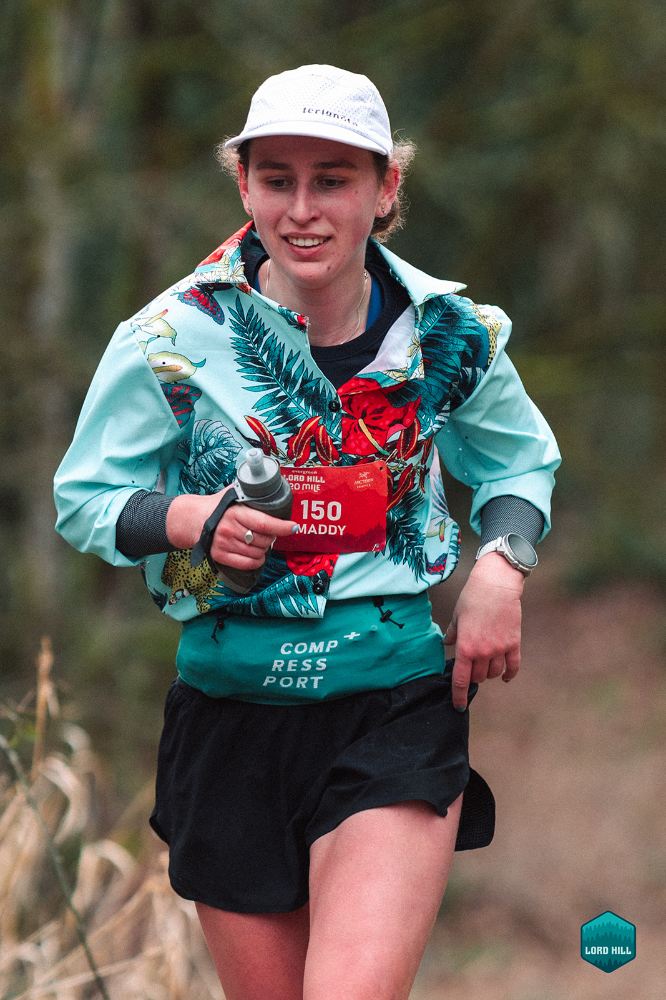

Trail Shirt / Sun Protection / Lightweight Layer
Cooling Sun Button-Up

BriefFirst sewing project
UserDesigned for myself
NeedLong-sleeve trail running shirt
This project began as my first sewn garment and a personal design brief: create a long-sleeve trail shirt that has some fun personality.
I have always loved patterned button-up running shirts for their casual, playful feel, but I was missing a long-sleeve trail running shirt that offered more sun coverage for exposed days.
The final garment translates that need into a lightweight layer with familiar button-up styling, easy ventilation, and enough coverage to feel useful in the mountains without losing its sense of fun.


